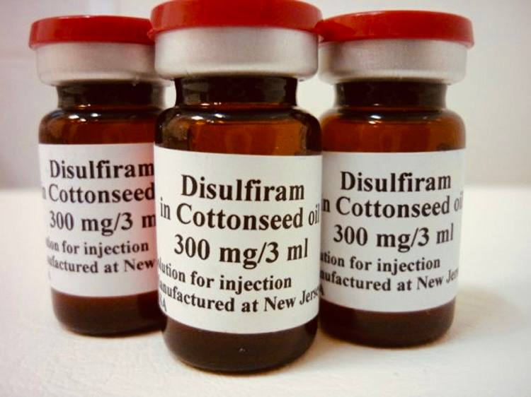

+380(97) 369 76
65
+380(97) 369 76
65Кодирование от алкоголизма уколом Дисульфирам
"Кодирование от алкоголизма в Киеве – трезвость, которая начинается сегодня!"
Работаем в Одессе, Киеве, Львове, Харькове, Днепре, Запорожье, Черноморске


Бесплатная консультация, работаем круглосуточно 24/7
"Кодирование от алкоголизма в Киеве – трезвость, которая начинается сегодня!"
Работаем в Одессе, Киеве, Львове, Харькове, Днепре, Запорожье, Черноморске
Дисульфирам – это лекарственное средство, которое на протяжении многих лет используется врачами-наркологами для кодирования от алкогольной зависимости с помощью инъекций. Препарат зарекомендовал себя в таких странах, как США, Канада, Норвегия и Франция, и получил широкое применение в украинской наркологии при лечении хронического алкоголизма, когда патологическая тяга к спиртному затмевает здравый смысл пациента.
Принцип работы кодирования: Дисульфирам ингибирует фермент ацетальдегиддегидрогеназу, который участвует в расщеплении ацетальдегида – токсичного промежуточного продукта метаболизма этанола. В результате, если после введения препарата пациент употребляет алкоголь, в организме накапливается ацетальдегид, что вызывает моментальную сильнейшую выраженную токсическую реакцию. Накопление ацетальдегида приводит к возникновению неприятных симптомов, таких как:
Психологический эффект:
Острая негативная реакция на алкоголь способствует формированию у пациента сильного физического и психологического отвращения к спиртному, что помогает снизить риск повторного употребления и способствует отказу от зависимости.
Укол от алкоголизма обеспечивает длительный эффект – его действие сохраняется целых 12 месяцев, это словно надежный якорь, удерживающий зависимого человека на пути трезвости и дарящий уверенность в завтрашнем дне. Более того, современные методики позволяют продлить этот эффект до пяти лет, что гарантирует еще большую стабильность и защиту от зависимости. Это возможность начать новую главу жизни, наполненную здоровьем, гармонией и истинной свободой от алкоголя.
Закодироваться от алкоголизма с помощью инъекции дисульфирама можно в Киеве в медицинской службе UmbrellaPlus “Безопасная наркология”. Врач-нарколог проведет бесплатную консультацию, назначит необходимые анализы и выполнит процедуру кодирования абсолютно анонимно, без внесения данных пациента в психиатрические реестры. Для обращения к врачу наркологу достаточно позвонить по номеру 050-021-69-57.
Стоимость кодирования от алкоголизма в Киеве начинается от 4999грн. Другие услуги наркологической службы UmbrellaPlus Киев:
| Услуга | Цена |
|---|---|
| Лечение алкоголизма Киев | От 1699 грн |
| Вывод из запоя Киев | От 1699 грн |
| Вывод из запоя на дому Киев | От 1999 грн |
| Капельница от алкоголя Киев | От 1699 грн |
| Капельница от алкоголя на дому Киев | От 1999 грн |
| Лечение пивного алкоголизма Киев | От 1699 грн |
| Лечение женского алкоголизма Киев | От 1699 грн |
| Кодирование от алкоголизма Киев | От 4999 грн |
| Кодирование от алкоголизма уколом Дисульфирам | От 4999 грн |
| Кодирование от алкоголизма уколом Эспераль | От 6500 грн |
Основным показанием для применения укола от алкоголизма является хроническое злоупотребление спиртным или наличие одной из трёх стадий алкогольной зависимости. Кроме того, данный метод рекомендуется, если другие подходы – такие как капельницы от алкоголизма, психотерапия или реабилитация – оказались неэффективными.
Для достижения длительной ремиссии в лечении зависимости важно использовать комплексный подход к медикаментозной терапии. Укол от алкоголизма, являющийся вторым этапом лечения после капельниц и психотерапии, помогает закрепить результат и снизить риск рецидива. Если предыдущие методы не дали желаемого эффекта, стоит всерьёз рассмотреть возможность кодирования с помощью укола дисульфирама.
Анонимно

"Дуже довго не міг самостійно позбавитися залежності, тому зважився на підшивку. Процедура пройшла успішно, і з того часу я навіть не думаю про спиртне. Страх перед можливими наслідками допомагає триматися на плаву, а підтримка фахівців – величезна підмога у цьому нелегкому шляху. Центр надає як фізичну, а й моральну допомогу. Вдячний їм за другий шанс."
Анонимно
"Решила сделать укол от алкоголизма по рекомендации подруги, которая проходила эту процедуру в этом же центре. Я сомневалась, но врачи всё объяснили, успокоили. После укола не чувствую тяги к алкоголю, хотя раньше сложно было представить день без выпивки. Сейчас наслаждаюсь трезвостью, чувствую себя намного лучше."
Анонимно
"Я никогда не думал, что психологическое воздействие может настолько сильно повлиять на мою жизнь. Врач помог осознать всю серьезность ситуации, и теперь алкоголь не вызывает у меня никакого интереса. Процедура безопасна и эффективна, рекомендую тем, кто хочет по-настоящему изменить свою жизнь."
Анонимно
"Я прошла кодирование гипнозом, и это было удивительное переживание. Во время сеанса я почувствовала глубокое расслабление, а потом – будто внутри что-то изменилось. Сейчас я свободна от алкоголя и наслаждаюсь этим состоянием. Благодарю центр за профессионализм и заботу! Отдельная благодарность Станиславу Вячеславовичу"
Анонимно
"Чесно кажучи, боявся рецидиву, але з процедури минуло півроку, і я навіть не думаю про випивку. Життя почало змінюватися на краще. Дякуємо лікарям за підтримку та мотивацію!"
Анонимно
"Після багаторічної боротьби із залежністю вирішила звернутись в клінку. Спочатку переживала, але лікарі дуже докладно розповіли про процес та можливі наслідки. Зараз я не п'ю вже 8 місяців і почуваюся чудово. Я така щаслива, що знайшла цей центр і знайшла контроль над своїм життям."
Анонимно
"Метод Долженко казался мне странным, но я решил попробовать. Оказалось, что это не просто кодировка, а глубокая работа с психикой. Это позволило мне кардинально изменить отношение к алкоголю. Уже год я не пью, и не планирую возвращаться к прежней жизни. Простое человеческое спасибо!"
Анонимно
"Гипноз помог мне избавиться от постоянной тяги к алкоголю. После сеансов я заметила, что стала спокойнее и увереннее в себе. Теперь алкоголь меня больше не интересует. Центр мне очень помог, и я благодарна за их заботу и поддержку."
Приезд в течении 60 минут от момента поступления заявки
Наши филиалы есть во всех больших городах Украины.
Мы оказываем профессиональную доказательную медицинскую помощь. Гарантией является наше имя.
Номер телефона:
+380 (97) 369 76 65
+380 (50) 021 69 57
Адрес главного офиса: г. Харьков ул. Сумская 47
Офис вашего города нужно
уточнить
Работаем в: Одессе, Киеве, Львове, Харькове, Днепре,
Запорожье
Telegram: t.me/umbrellaplus
График работы: Круглосуточно